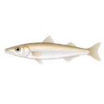
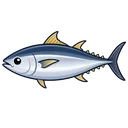
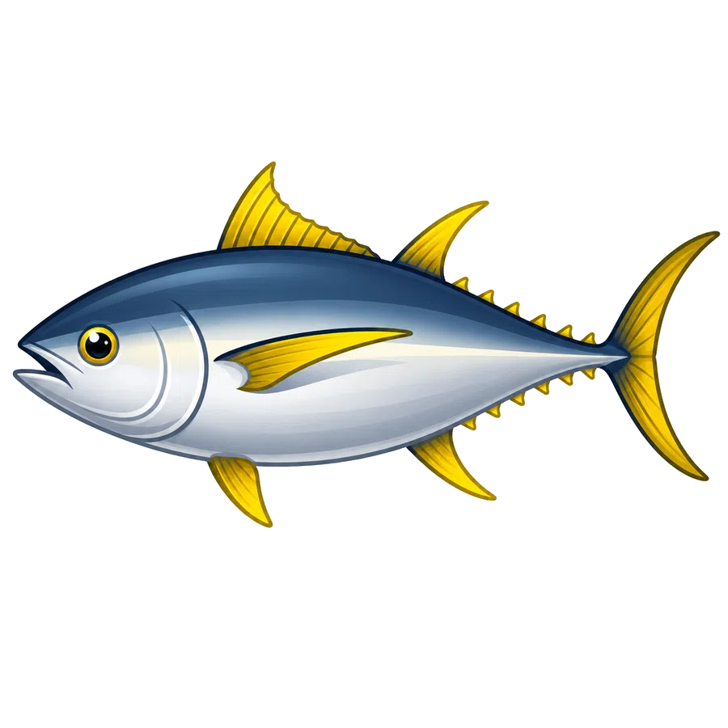

今週の傾向
2026年7月1日〜7月7日（7日間）
今週の出船16便前週比 +5便
🎣 今週の主要釣果

シロギス6便前週比 +1便平均 32.8匹・最大 24cm アジ4便前週比 +2便平均 19.2匹・最大 41cm
アジ4便前週比 +2便平均 19.2匹・最大 41cm
🏆 今週の大物: アジ 41cm(7/1)
📅 来週の見どころ (7/8-7/14)
シーズンシロギス:夏の浅場釣り好調継続
シーズンアジ:夏の数釣り好調・早朝便おすすめ
潮回り7/12〜7/14 大潮 — 朝マズメ活性 UP 期待
📊 過去比較（同月）
2025年7月（全期間）
シロギス 20便
2026年7月（7/7時点）
シロギス 6便（途中）
16便
今週の出船
16
釣果便数
32.8匹
シロギス平均
📅 年間サマリー
2025年8月 〜 2026年7月（過去12ヶ月）
📝 この船宿の特徴
茅ヶ崎港のちがさき丸は、タイ五目・アマダイ・アジ・マダイ・キハダマグロなど多魚種のタイ五目メインを案内している船宿。年間出船762便・28魚種の釣果記録があり、幅広いターゲットに対応する懐の深さが魅力。
季節ごとの主力魚種は、春はタイ五目・アジ、夏はシロギス・タイ五目、秋はタイ五目・アマダイ、冬はタイ五目・アマダイが中心で、四季を通じて狙える魚種が豊富。特に秋に出船が集中する。
大物実績は関東トップクラスで、タイ五目最大82.0cm・キメジ最大61.2kg・キハダマグロ最大78.8kgなど全船宿ランキング上位に10件入賞。特にタイ五目は競合6船宿中1位の実績で、茅ヶ崎港エリアでも屈指の型狙いポイントを押さえている証拠。
月別実績では9月が年間最多の113便と最盛期で、タイ五目・カツオを中心に活気ある釣行が続く。出船数上位は9月（113便）・10月（81便）・8月（79便）と、季節を問わず安定した運航スケジュールを維持している。
タイ五目を中心に多魚種を狙いたい釣り人におすすめ。茅ヶ崎港エリアの船宿選びに迷ったら、年間出船762便・28魚種という実績が示す通り、幅広いシーズン・狙い物に対応できる選択肢として候補に入る一隻。
762便
年間出船数
233日
年間釣行日数
28種
年間釣果魚種数
🎣 年間 主要魚種 TOP3
🥇
タイ五目290便
平均釣果 6.0〜8.6匹最大匹数 57匹最大型 9.4 kg
🥈
アマダイ122便
平均釣果 1.9〜7.4匹最大匹数 18匹最大型 55 cm
🥉
シロギス60便
平均釣果 14.9〜40.1匹最大匹数 73匹最大型 26 cm
🌐 季節別 主力魚種
過去12ヶ月の季節ごと主力魚種 TOP2（毎月1日更新）
🌸春3-5月
- 1タイ五目51便平均 9.8〜9.0匹 / 最大匹数 52匹 / 最大 4.8 kg
- 2アジ32便平均 14.8〜40.4匹 / 最大匹数 102匹 / 最大 43 cm
☀️夏6-8月
- 1シロギス47便平均 14.9〜41.5匹 / 最大匹数 73匹 / 最大 26 cm
- 2タイ五目45便平均 10.0〜18.7匹 / 最大匹数 57匹 / 最大 6.3 kg
🍁秋9-11月
- 1タイ五目114便平均 4.1〜7.1匹 / 最大匹数 44匹 / 最大 6.6 kg
- 2アマダイ49便平均 2.4〜8.8匹 / 最大匹数 18匹 / 最大 54 cm
❄️冬12-2月
- 1タイ五目80便平均 2.0〜5.2匹 / 最大匹数 32匹 / 最大 9.4 kg
- 2アマダイ54便平均 1.3〜6.5匹 / 最大匹数 14匹 / 最大 55 cm
魚種別・海況と釣期の傾向（データ分析）無料
この船宿で当サイトが分析した魚種について、過去の釣果と海況・潮回りの関係を集計した傾向です。過去データ上の相関であり釣果を保証するものではありません。実際の釣行判断は船宿の最新情報と当日の海況を優先してください。
タイ五目
- 伸びやすい時期の目安: 8月中旬・8月上旬
- クロロフィル濃度（ベイト量の目安）が高い日ほど釣果が多い傾向がみられます（相関の強さ: 弱め）。
- 表層水温が高い日ほど釣果が多い傾向がみられます（相関の強さ: 弱め）。
アマダイ
- 伸びやすい時期の目安: 8月下旬・9月上旬
- 水深100m層の水温が高い日ほど釣果が少ない傾向がみられます（相関の強さ: 明瞭）。
- 水深200m層の水温が高い日ほど釣果が少ない傾向がみられます（相関の強さ: 中程度）。
シロギス
- 伸びやすい時期の目安: 6月上旬・7月上旬
アジ
- 伸びやすい時期の目安: 10月中旬・1月下旬
- 水深200m層の水温が高い日ほど釣果が少ない傾向がみられます（相関の強さ: 中程度）。
- 水深50m層の水温が高い日ほど釣果が少ない傾向がみられます（相関の強さ: 弱め）。
ショウサイフグ
- 伸びやすい時期の目安: 5月上旬・6月下旬
- 海面水温が高い日ほど釣果が多い傾向がみられます（相関の強さ: 弱め）。
- 水温の下限が高い日ほど釣果が多い傾向がみられます（相関の強さ: 弱め）。
🏆 関東トップクラス大物実績
魚種別「船宿別最大値」ランキングで上位入賞した自慢の1本（毎月1日更新）
- 🥇タイ五目 全船宿中 1/6位2024/10/0882 cm
- 🥇

キメジ 全船宿中 1/31位2023/09/2561.2 kg - 🥇タイ五目 全船宿中 1/6位2024/06/0910.0 kg
- 🥈

キハダマグロ 全船宿中 2/46位2025/11/2478.8 kg - 🥈
 カツオ 全船宿中 2/46位2025/10/0256.2 kg
カツオ 全船宿中 2/46位2025/10/0256.2 kg - 🥈
 フグ 全船宿中 2/21位2023/08/0555 cm
フグ 全船宿中 2/21位2023/08/0555 cm - 🥈アマダイ 全船宿中 2/14位2025/03/236.0 kg
- 🥈メジナ 全船宿中 2/14位2026/05/182.0 kg
- 4位
 ヤリイカ 全船宿中 4/64位2026/02/0158 cm
ヤリイカ 全船宿中 4/64位2026/02/0158 cm - 4位
 シロアマダイ 全船宿中 4/29位2026/07/0453 cm
シロアマダイ 全船宿中 4/29位2026/07/0453 cm
基本情報
エリア茅ヶ崎港
所在地神奈川県茅ヶ崎市南湖6丁目18-6
電話0467-86-1157
公式サイト外部サイトを開く →
主要対象魚タイ五目 ・ アマダイ ・ シロギス ・ アジ ・ マダイ
主要ポイント茅ヶ崎沖（直近実績より）
アクセス茅ヶ崎駅 / 駐車場: （要確認）
営業時間7:00～14:00（受付）
定休日毎週火曜日
直近30日出船6日 (当サイトのクロール記録ベース)
船舶・設備
全長15 m
総トン数17 t
定員39 名
予約方法
予約方法船宿へ直接お電話 → 0467-86-1157
レンタル品あり（レンタル完備）
※ 予約は船宿へ直接お電話ください。料金・空席状況・出船判断などは電話で確認するのが確実です。
季節別の狙い物
春 (3〜5月)
マダイ五目
夏 (6〜8月)
アジ、イカ
秋 (9〜11月)
マダイ、アマダイ
冬 (12〜2月)
LT五目
最近の釣果実績（直近7日・船宿実績）
シロギス26〜62匹
6/307/17/27/37/47/57/6
アジ22〜42匹
6/307/17/27/37/47/57/6
 マダイ1〜2匹
マダイ1〜2匹
6/307/17/27/37/47/57/6
広告スペース（レクタングル）
茅ヶ崎港エリアの船宿ランキング（直近30日・釣果件数）
1位ちがさき丸（このページ）16件
📊 月別釣果実績
過去13ヶ月の出船・釣果便数データ（毎月1日に前月分を自動追加）
2026年7月
出船 16便
- シロギス6便・平均32.8匹・最大24cm
- アジ4便・平均19.2匹・最大41cm
- マダイ3便・平均1.0匹・最大3.0kg
- ヒラメ2便・最大1.0kg
- シロアマダイ1便・最大53cm
2026年6月
出船 63便
- シロギス21便・平均33.3匹・最大26cm
- マダイ17便・平均1.1匹・最大3.4kg
- アジ13便・平均22.8匹・最大41cm
- イサキ9便・平均23.9匹・最大26cm
- ヒラメ2便・平均2.0匹・最大1.0kg
2026年5月
出船 64便
- タイ五目17便・平均9.5匹・最大3.3kg
- アジ16便・平均23.1匹・最大40cm
- シロギス13便・平均24.6匹・最大24cm
- マダイ11便・平均1.5匹・最大2.9kg
- メジナ2便・平均6.0匹・最大2.0kg
過去10ヶ月分の実績を表示（2026年4月〜2025年7月）
2026年4月
出船 19便
- タイ五目12便・平均24.4匹・最大3.5kg
- アジ4便・平均40.2匹・最大42cm
- アマダイ1便・平均7.0匹・最大39cm
- ホウボウ1便・平均1.0匹・最大31cm
- マダイ1便・最大2.8kg
2026年3月
出船 68便
- タイ五目22便・平均4.2匹・最大4.8kg
- アマダイ18便・平均3.4匹・最大50cm
- アジ12便・平均28.8匹・最大43cm
- ヤリイカ7便・平均3.0匹・最大48cm
- マダイ4便・平均1.0匹・最大2.1kg
2026年2月
出船 54便
- タイ五目20便・平均1.8匹・最大2.0kg
- アマダイ17便・平均3.0匹・最大51cm
- ヤリイカ14便・平均6.1匹・最大42cm
- カワハギ1便・平均2.0匹・最大21cm
- スルメイカ1便・平均6.0匹・最大33cm
2026年1月
出船 63便
- タイ五目28便・平均3.2匹・最大2.2kg
- アマダイ21便・平均2.5匹・最大55cm
- マダイ4便・平均1.0匹・最大2.3kg
- フグ2便・平均1.0匹・最大29cm
- ショウサイフグ2便・平均1.0匹・最大0.7kg
2025年12月
出船 67便
- タイ五目32便・平均3.6匹・最大3.8kg
- アマダイ16便・平均4.7匹・最大55cm
- キメジ7便・平均1.0匹
- カワハギ3便・平均3.7匹・最大29cm
- フグ2便・平均1.0匹・最大2.1kg
2025年11月
出船 75便
- タイ五目30便・平均2.6匹・最大4.9kg
- アマダイ19便・平均4.5匹・最大50cm
- キハダマグロ14便・平均1.0匹・最大78.8kg
- キメジ4便・平均1.0匹・最大8.8kg
- アジ3便・平均22.3匹・最大43cm
2025年10月
出船 81便
- タイ五目31便・平均4.2匹・最大4.2kg
- キハダマグロ20便・平均1.6匹・最大74.4kg
- アマダイ13便・平均4.8匹・最大54cm
- カツオ6便・平均2.0匹・最大5.7kg
- マダイ5便・平均2.0匹・最大2.2kg
2025年9月
出船 113便
- タイ五目53便・平均6.6匹・最大3.3kg
- カツオ31便・平均2.1匹・最大5.3kg
- アマダイ17便・平均5.2匹・最大43cm
- アジ4便・平均27.2匹・最大43cm
- キハダマグロ2便・最大23.9kg
2025年8月
出船 79便
- タイ五目45便・平均16.0匹・最大3.7kg
- シロギス20便・平均20.8匹・最大26cm
- キハダマグロ4便・最大23.8kg
- アジ3便・平均22.7匹・最大40cm
- カツオ3便・平均1.0匹・最大5.2kg
2025年7月
出船 53便
- タイ五目21便・平均18.0匹・最大4.3kg
- シロギス20便・平均25.6匹・最大27cm
- スルメイカ9便・平均6.8匹・最大40cm
- アジ2便・平均23.0匹・最大37cm
- マゴチ1便・最大48cm